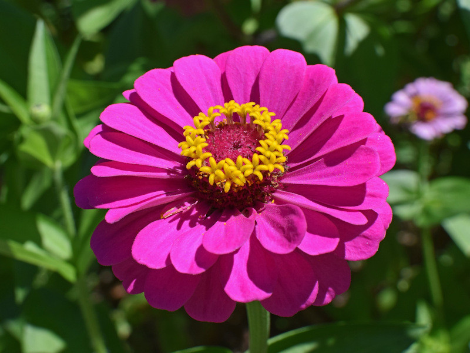
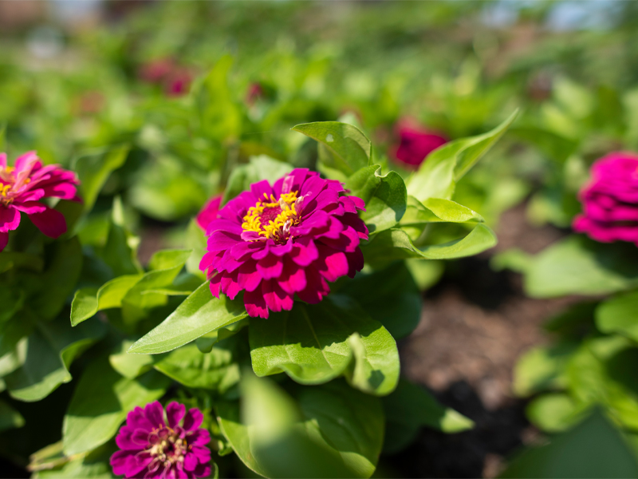
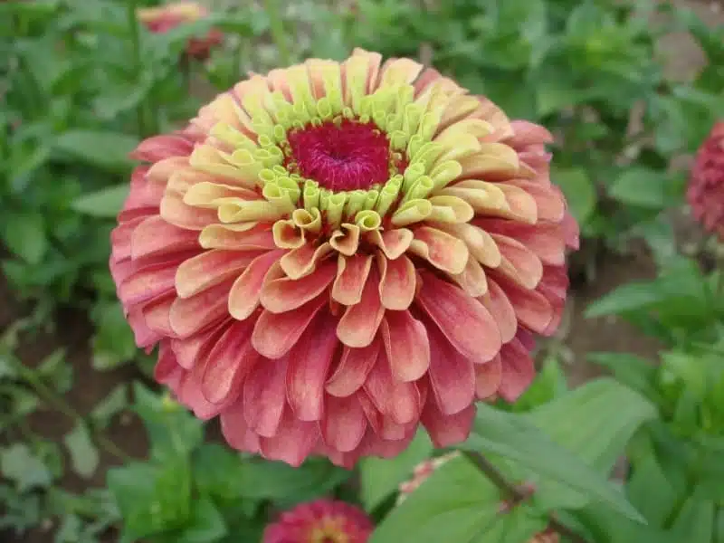
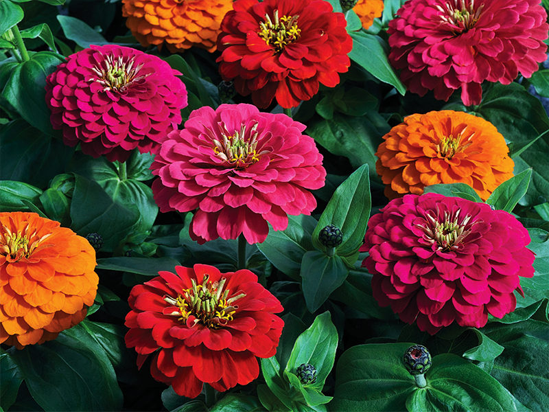

Meaning: Everlasting friendship
Origin
Because zinnias are easy to grow and reseed with abundance, the Victorians associated them with everlasting friendship. A bouquet of zinnias was a common gift for a friend leaving on a trip. It was meant to convey that the friend would be missed and thought of frequently while they were away.
Gallery



